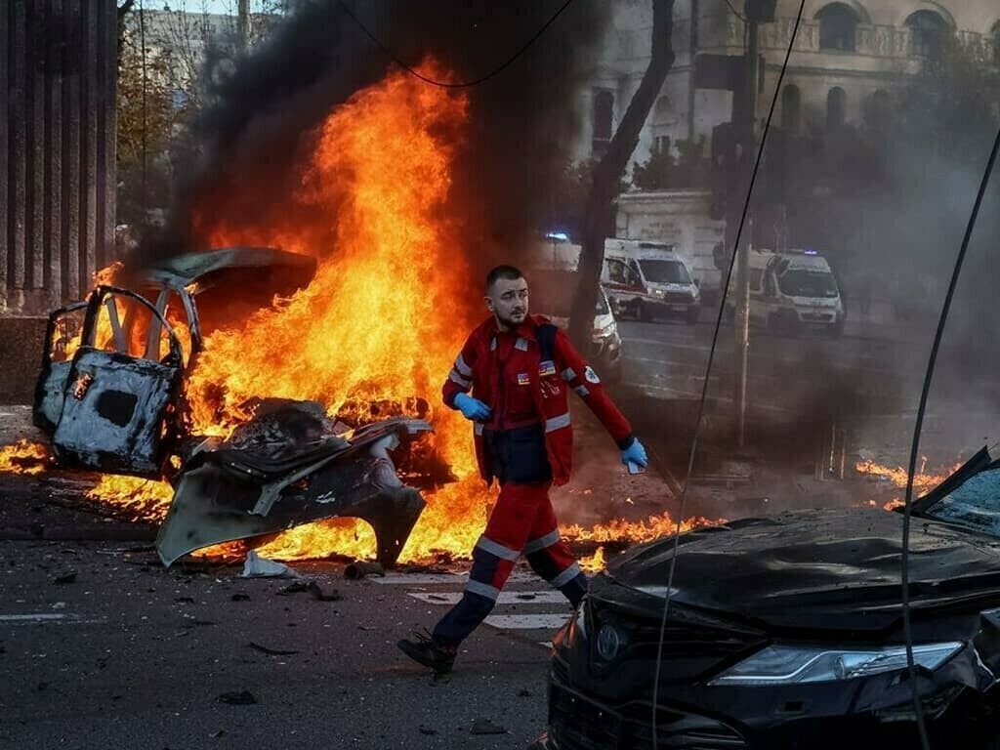

EN DIRECT - Guerre en Ukraine : Moscou dit avoir mené de nouvelles frappes massives
Le ministère russe de la Défense a annoncé ce mardi avoir visé des cibles rrrilitaires et des installations électriques, au lendemain de bombardements russes d'ampleur dans tout le pays et alors que le G7 doit se réunir au sujet de ces frappes.
RECIT - Quand les blessés du groupe Wagner repartent au front